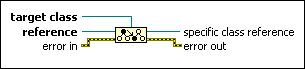

To More Specific Class Function
Owning Palette: Application Control VIs and Functions
Requires: Base Development System
Typecasts a reference, such as a control or a type definition, to a more specific class or interface in the inheritance hierarchy.
For example, if Class A inherits from Class B, a variable of type B can hold a value of type A. You can use the function to downcast from type B to type A. If the typecast is invalid, this function returns an error at run time.
You can use the To More Specific Class function for casting any class hierarchy in LabVIEW, including VI Server refnums, .NET/ActiveX refnums, and LabVIEW classes or interfaces.

 Add to the block diagram Add to the block diagram |
 Find on the palette Find on the palette |